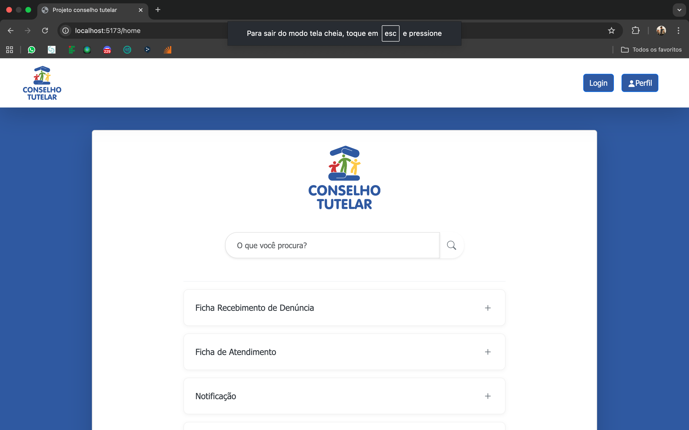
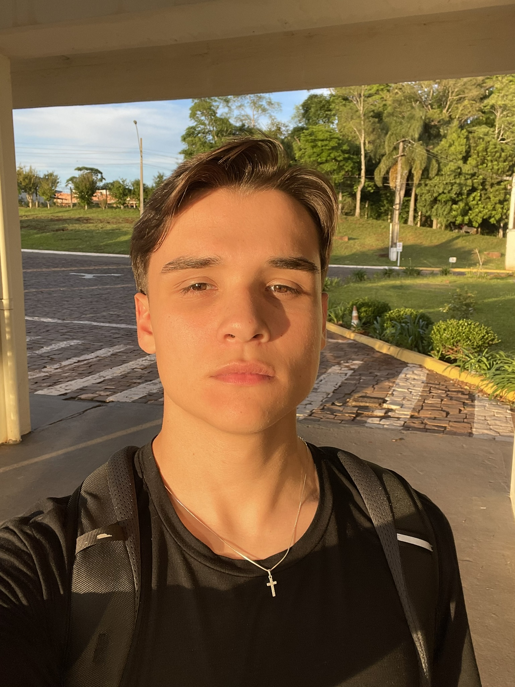

Child Welfare Case Management System
Our school team made a software to manage child welfare cases from the city of Panambi. In this system, we used React.js, Node.js and MySQL.
See on VercelDeveloper passionate about building efficient solutions and optimizing projects.

I am a developer focused on systems development and problem-solving. With a background in Back-end, I constantly seek to learn new technologies and apply them to real-world projects. Currently, I am honing my skills in C# and ERP development.
Focused on software engineering, data structures, and algorithms.
Focused on software engineering, learned the basics of HTML, CSS, PHP, Databases SQL.

Our school team made a software to manage child welfare cases from the city of Panambi. In this system, we used React.js, Node.js and MySQL.
See on Vercel